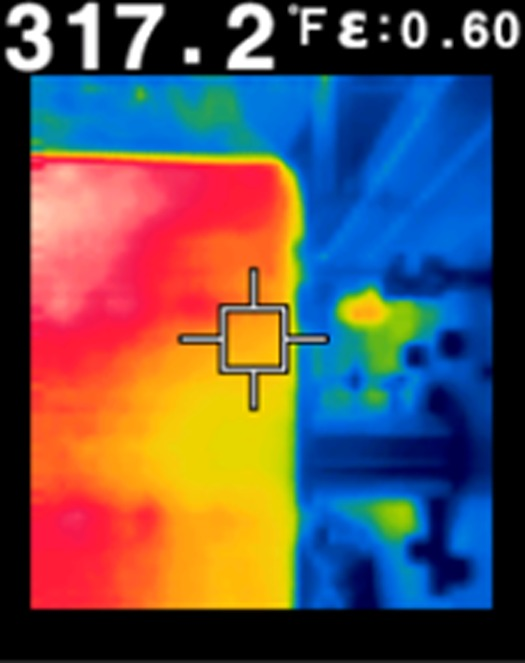
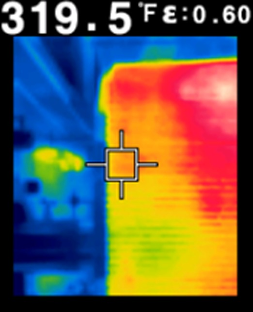

Why Temperature Must Be Even Across the Band
An oven band grows as it heats up. When the whole width is at the same temperature, both edges grow by the same amount and the band stays straight. When one side is colder, that side grows less than the other, so the band is effectively shorter on the cold side and longer on the hot side.
The difference in length changes the tension across the width. One edge carries more load than the other, and the band starts to steer to one side, exactly as if the oven terminals were out of alignment. Because the effect comes from heat and not from the mechanics, tracking adjustments made cold often do not hold once the oven is at temperature.
Common Causes of Uneven Temperature
Gaps, wet or compressed insulation and loose panels let heat escape on one side of the chamber.
Inspection doors left open, or doors with worn seals, cool the band locally on that side.
Building fans, open factory doors, air conditioning and drafts near the oven entry or exit cool one edge more than the other.
Unbalanced burners, partly closed dampers or uneven exhaust create hot and cold sides inside the zones.
Where there is no product to absorb heat, that part of the band runs hotter than the loaded area.
The band leaves the chamber and cools quickly in open sections, where any draft acts directly on one side.
Effects on the Band
- Mistracking: the band drifts toward one side and tracking corrections never hold for long.
- Edge damage: the band rubs the oven frame or side walls, and edges wear, crack or curl.
- Permanent distortion: repeated uneven stress at high temperature can leave the band curved or wavy.
- Uneven baking: product on the cold side bakes differently from product on the hot side.
- Shorter band life and unplanned stops for repairs.
Thermal Camera Analysis
BELTPRO uses a thermal camera to measure the band temperature on both sides, at the same positions along the oven, with the oven in normal production. Comparing the operator side and the non-operator side at each point shows whether the band is heated evenly and where a difference starts.


The camera also looks beyond the band. Thermal images of the oven walls, doors, seals and surrounding area reveal heat leaks, damaged insulation and cold air entering the chamber, so the root cause can be corrected instead of only adjusting the band tracking.
A report with thermal images of both band sides along the oven, the temperature difference at each point, the likely causes found on the oven and its surroundings, and the recommended corrections.
Thermal Analysis and Alignment Work Together
A band that tracks badly can have a mechanical cause, such as terminals out of parallel, or a thermal cause, such as one cold side. Often both are present. By combining optical alignment of the terminals with thermal analysis of the band, BELTPRO separates the two causes and corrects each one, so the band runs straight both cold and at operating temperature.
BELTPRO Oven Band Thermal Analysis
If your oven band keeps drifting, has damaged edges or needs constant tracking corrections, a thermal analysis can show what the mechanics alone cannot. Contact BELTPRO to schedule a thermal survey of your oven.
This article is intended for general technical guidance and preliminary engineering reference only. Oven settings and band adjustments must always follow the equipment and band manufacturers' documentation, the actual operating conditions and the plant's safety procedures.